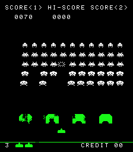
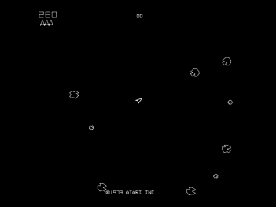
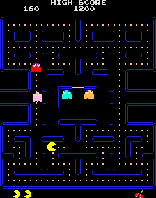
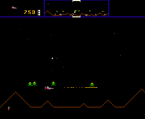

Game On: Origins
The lovely Susan and I managed to nip into the Game On exhibit at the Science Museum, back in February, just before it ended. I was so glad that we did - what a delight it was! I couldn't believe the assemblage of classic hardware they had packed into those rooms, all working and playable.
I wanted to write a lovingly detailed description of all the games we found therein, wallowing in nostalgia and techno-fetishism. But in the 3 months since I first wrote the above paragraph, I've never got around to completing it, so the following annotated list of my personal highlights from the first section will have to suffice for the moment, though it is naught but a gnarled stub of the monument I had envisaged.
Spacewar! (MIT, 1962)
 Spacewar! on the PDP-1's oscilloscope-like display.
Spacewar! on the PDP-1's oscilloscope-like display.
Not just the strongest entry for the hotly-contested title of 'first ever computer game', but actually by far and away the most fun of any of the contenders, featuring a depth of gameplay that wouldn't be matched until Defender, nearly 20 years later. A two player deep-space duel with Newtonian physics, which remains surprisingly playable even today. About 200 hours of work went into writing the initial version, which was then refined with touches such as a background starfield which maps every star from the real night sky of fifth magnitude or brighter, precessing slowly to display all the well-known constellations as the game progresses. The Game-On exhibit had the original hardware on show, a defunct PDP-1 the size of a Hummer, which ran at 0.2MHz. In an inadvertent demonstration of Moore's Law, a playable simulacrum of the game itself was provided on a six-inch Vectrex from the '80s.
Pong (Atari, 1972)

Nolan Bushnell founds Atari, and when the local bar reports his first machine to be 'broken', it turns out to be due to its innards overflowing with quarters. Before my time, this one, but a clear indicator of things to come. Interestingly, many of the subsequent incarnations of Pong, for home consoles and the like, didn't play as well as this original model, since it was constructed using dedicated analog electronics, which enabled a rapid framerate, and commensurate fluidity of gameplay, which could not be matched by software implementations for years to come.
Space Invaders (Taito, 1978)

Triggered coin shortages in Japan, prompting the government to quadruple the supply of 1 Yen coins. To this day the cultural resonance lives on, as the French urban street artist 'Invader' is still placing his discreet mosaics in public places around the world, returning only when local authorities scrape them off, to put a small white number where the invader used to be. I was never quite as massively captivated by it as by other games, although no doubt my parents would protest that was only because 10p coins were in such short supply for my seven-year old self. I however, shall stick to my story, that perhaps the blatantly predictable gameplay proved fractionally less of a lure than other, subsequent titles that left a little more to the imagination.
Asteroids (Atari, 1979)

A clear descendant of the original Spacewar, featuring deep-space based Newtonian combat rendered with rotational vector graphics which afford an austere Kubrickian elegance to the presentation. In common with many games of this vintage, the terrific bass thumps and distinctive chirps and warbles of the sound effects were produced using custom analog electronics, specifically designed for the game. The combination is dynamite, and Asteroids went on to become Atari's greatest selling game of all time, tempting ten year olds such as myself into countless hours spent lurking around the screen edges, dreaming of a high-stakes lifestyle out beyond the Kuiper belt in a singleship, hunting down those high-scoring UFOs.
Pac Man (Namco, 1979)

"If computer games affected our behaviour, then by now there'd be a generation that had grown up running around in darkened rooms, munching magic pills and listening to repetitive electronic music - oh, hang on."
Missile Command (Atari, 1980)

The game's original design tasked the player with the defence of American west coast cities, from San Diego to San Francisco, while unending waves of nukes rained down like fireflies. Cold war tensions made that scenario a little too chilling for comfort, so the game was re-cast with a science-fiction setting. The result, with immaculate use of a then-novel trackball controller, and seismic sound effects, constituted a classic that remained a prominent and profitable entry in arcades for fifteen years after its release, and remains an inspiration for modern games such as Defcon (PC, 2006).
Battlezone (Atari, 1980)

A trailblazing first-person perspective 3D virtual reality, and famously adapted by the US Army to train gunnery crews of the Bradley Fighting Vehicle. Myths surrounding the game abounded, of increasingly esoteric enemies that could be encountered with prolonged play, of continued progress towards the distant mountains leading to the exploration of exotic terrain, and the discovery of factories which were producing the endless supply of enemy tanks rolling your way. In reality, the hardware was hard-pressed to perform the required 3D calculations for even the simple surroundings presented at the start of the game, and there was no more content than could be seen within five minutes of that. And yet, the stark scenarios it presented blossomed within the imagination of my young self, offering possibilities for the presentation of limitless worlds, to anyone who could bring with them but a modicum of willing-suspension.
Defender (Williams, 1980)

While its contemporaries could often be mastered by careful, methodical play, memorising patterns, and the occasional bout of dexterity, Defender proved to be the ultimate test of reactions, spatial awareness and hand-eye skill. Once underway, the game becomes a non-stop roller-coaster of pant-wettingly tense action, as your gymnastically maneuverable craft, spitting pyrotechnic plutonium death, carefully rescues fragile humanoids from a sky full of of the most fiendish, purposeful, body-snatching, god-damned alien sons-of-bitches to ever be rendered in pixel. Clearly the hatred in me lives on.
End of the Early Arcade Scene
For me, Defender marks a watershed in the industry, prior to which games developers had to go through extraordinary contortions in order to coax the primitive hardware of the times into producing anything coherent on the screen at all. As a result, the games of the era were forced to model simple worlds, depicted using visuals that were highly stylised, to say the least. To this day I find a kind of beauty in the abstract minimalism that this required, a kind that, with occasional exceptions, is missing from games of later generations.
The game developers of the day were more inventors than engineers or authors. Their creativity was necessarily of a predominantly left-brained kind, but as is so often the case, in being channeled by the technical restrictions they faced, that creativity responded by seeking out nooks and crannies in which to flourish, and then leaping forth, blossoming in unexpected directions, producing games with rude, brash exteriors, but nonetheless exuding a rugged and determined charm, lurching with barely contained excitement from one harebrained idea to the next.
Defender in many ways marks the culmination of this era. Primary author Eugene Jarvis' legendary programming efforts wrung incredible results from the paltry hardware resources at his disposal, while introducing concepts such as the horizontally-scrolling wraparound landscape, the tactical awareness granted by the radar, the smart bomb - which perfectly offset the otherwise ruthlessly difficult play. All of these would remain staples in the industry for decades to come. Each one, arguably, an inevitable invention, an idea whos time had come, an mere incremental development of the exploration of virtual space that nascent gaming represented. But nonetheless, each one, inarguably, had never been done before. To bring them all together in a single sustained creative outburst represented a peak, a marriage of engineering, art, business and frivolity that had never previously been attempted.
By 1981, just one year after the release of Defender, the hardware quickly standardised and evolved such that it no longer created such intrusive restrictions on creativity. The business model had been well established, the market assuredly huge and growing every year. The risks and the difficulties overcome, a mass of new game companies moved in, flooding the market with uninspired, profit-driven efforts and mediocre imitations. Programmers were relegated to programming, artists and modellers took over the visuals, and what should have been the central role, that of game design, fell in the cracks, while the other former partner in the creative enterprise, the players who had previously supplied the imagination, were made redundant.
It wasn't all doom and gloom, however (no pun intended.) In the midst of the impending '80s game boom, there were plenty of gems, once one filtered through all the dross. I've found this write-up most enjoyable, so maybe I'll write some more about that next week...
Comments